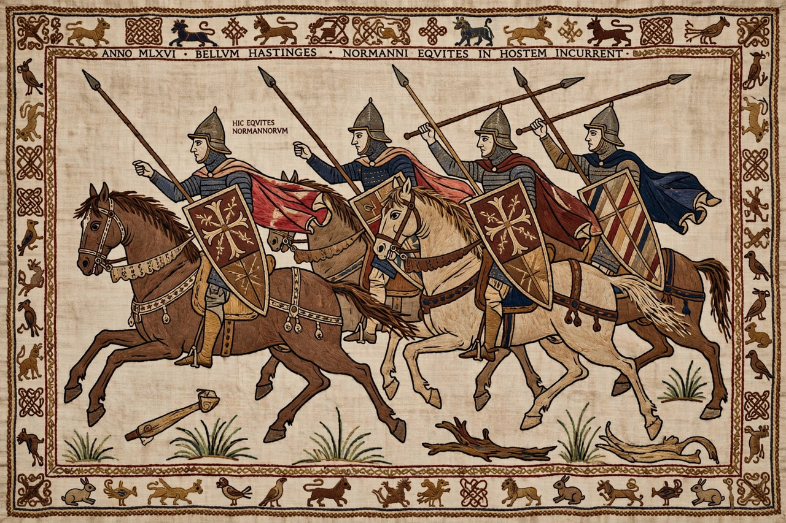

| Norman Conquest of England | |
|---|---|
 Norman knights at Hastings, from the Bayeux Tapestry | |
| Date | 1066–1075 |
| Location | England |
| Result | Norman victory; William crowned king of England |
| Key events | Battle of Stamford Bridge (25 Sept 1066); Battle of Hastings (14 Oct 1066); Harrying of the North (1069–70) |
The Norman Conquest was the 11th-century invasion and occupation of England by an army made up of thousands of Norman, Breton, and French troops and led by Duke William II of Normandy, later styled William the Conqueror. It remains the last successful foreign invasion of England and transformed the country's language, aristocracy, church, and government.
Normandy itself had been founded in 911 when the Frankish king granted land at the mouth of the Seine to the Viking leader Rollo; his descendants, the Normans ("Northmen"), adopted French language and Christianity while retaining formidable military energy. When the childless Edward the Confessor died in January 1066, Harold Godwinson, the most powerful English earl, was crowned king. William claimed Edward had promised him the throne and that Harold had sworn an oath to support him; he obtained papal blessing for an invasion to enforce the claim.
While William's fleet was delayed by wind, the Norwegian king Harald Hardrada invaded the north. Harold marched north and destroyed the Norwegian army at Stamford Bridge on 25 September, killing Hardrada. Three days later William landed at Pevensey. Harold force-marched south with an exhausted army and met the Normans near Hastings on 14 October. The Battle of Hastings lasted all day; English shield-wall resistance was broken by feigned retreats and archery, Harold was killed — traditionally by an arrow in the eye — and William marched on London, where resistance collapsed. He was crowned in Westminster Abbey on Christmas Day 1066.
Rebellions flared across England for five years. William answered with castle-building — hundreds of motte-and-bailey castles imposed Norman control — and with the Harrying of the North (1069–70), a systematic devastation of Yorkshire and the northwest that caused famine and, by Domesday's evidence, left much land "waste." The last major revolt, the Revolt of the Earls in 1075, ended Anglo-Saxon resistance. The native aristocracy was almost entirely dispossessed: by 1086 only a handful of Englishmen held significant land.
The Domesday Book of 1086, a survey without parallel in medieval Europe, records the new landholding order. French became the language of court and law for three centuries, permanently transforming English vocabulary; Romanesque architecture remade cathedrals and castles; the English Church was Normanized under Lanfranc; and England was bound into a cross-Channel aristocratic world, with consequences — including centuries of Anglo-French conflict — that shaped both nations.